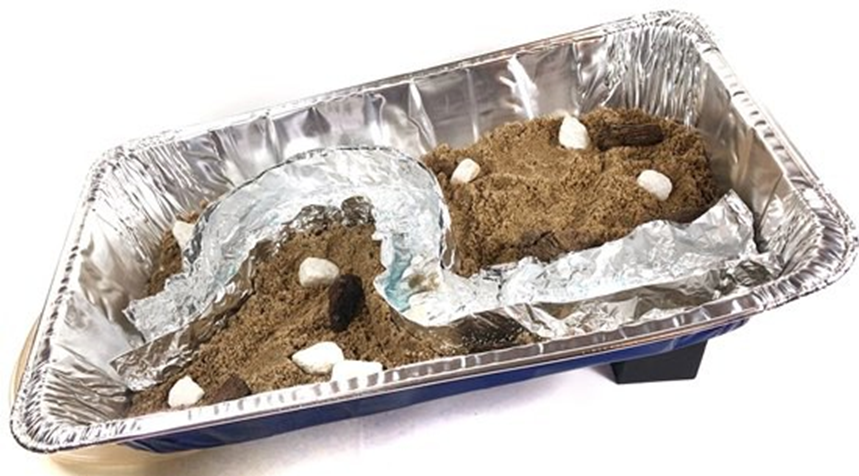

سرگرمی:
سولر اپ ڈرافٹ ٹاور بنائیں
خلاصہ:
تعارف:
کیا آپ کو کبھی سنبرن ہوا ہے؟ اگر ایسا ہے تو، آپ جانتے ہیں کہ سورج کی گرمی کتنی طاقتور ہو سکتی ہے! کیا آپ جانتے ہیں کہ اس حرارت کو برقی توانائی میں بھی تبدیل کیا جا سکتا ہے؟ آپ نے سولر سیلز کے بارے میں تو سنا ہوگا، لیکن سولر اپ ڈرافٹ ٹاور کا کیا ہوگا؟ یہ بہت سادہ ڈھانچہ ہوا کو گرم کرنے کے لیے سورج کا استعمال کرتا ہے، جو پھر ایک بڑے ٹاور کے اندر ایک ٹربائن کو طاقت دیتا ہے۔ اس سرگرمی میں، آپ ان میں سے ایک ٹاور خود بنائیں گے۔ کیا آپ کو لگتا ہے کہ آپ صرف گرم ہوا کے ساتھ ایک پروپیلر اسپن کر سکتے ہیں؟
مواد:
- سیاہ تعمیراتی کاغذ (تقریباً 20 x 20 انچ)
- تعمیراتی کاغذ کا چھوٹا ٹکڑا (کوئی بھی رنگ)
- پینسل
- قینچی
- ٹیپ
- ماڈلنگ مٹی کا ٹکڑا
- لکڑی کا سیخ
- سوئی
- تھرمامیٹر
- تاپدیپت روشنی کے بلب یا ہیٹ لیمپ کے ساتھ لیمپ
- کاغذ
- اختیاری: دھوپ، اور باہر ہوا سے محفوظ علاقہ
- اختیاری: ٹائمر
- اختیاری: سفید تعمیراتی کاغذ
تیاری کا کام:
- سیاہ تعمیراتی کاغذ کو ایک مخروطی شکل میں رول کریں جس میں سب سے اوپر (2-انچ قطر) اور نیچے (4-انچ قطر) کا ایک بڑا افتتاحی حصہ ہو۔
- شنک کو جگہ پر رکھنے کے لیے ٹیپ کا استعمال کریں۔ پھر، اوپر اور نیچے کے سروں کو سیدھا کرنے کے لیے کاٹ دیں۔ شنک تقریباً 10-15 انچ اونچا ہونا چاہیے اور خود سے کھڑا ہونے کے قابل ہونا چاہیے۔
- مخروط کے نچلے حصے میں، تین مساوی فاصلے والے 2-انچ x 0.5-انچ محرابوں کو کاٹ دیں۔ یہ آپ کے ہوا کے داخلے ہوں گے۔ اس بات کو یقینی بنائیں کہ شنک اب بھی باقی کنارے پر کھڑا رہ سکتا ہے۔
- تعمیراتی کاغذ سے تقریباً 3 انچ قطر کا پروپیلر کاٹ دیں۔
- ٹیپ کے ساتھ، سوئی کو لکڑی کے سیخ کے اوپری حصے سے جوڑیں جس کا رخ اوپر کی طرف ہو۔
- ماڈلنگ مٹی سے ایک گیند بنائیں اور اسے اپنے کام کی جگہ پر رکھیں۔
طریقہ کار
- اپنے سولر اپ ڈرافٹ ٹاور کو قائم کرنے کے لیے گھر کے اندر ہوا سے محفوظ جگہ تلاش کریں۔ یہ ضروری ہے کہ آپ کے تجربے کے دوران کوئی بیرونی ہوا کا بہاؤ نہ ہو۔
- کالے کاغذ کے شنک کو مٹی کے اوپر رکھیں تاکہ یہ شنک کے بیچ میں واقع ہو۔
- لکڑی کے سیخ کو ٹاور کے اوپری حصے کے ذریعے مٹی میں چپکا دیں، تاکہ سیخ شنک کے بیچ میں چپک جائے۔ سیخ کے اوپر کی سوئی کو شنک سے تقریباً 1.5-2 انچ چپک جانا چاہیے جیسا کہ نیچے تصویر میں دکھایا گیا ہے۔
- پروپیلر لیں اور اسے سوئی کے اوپر رکھیں جیسا کہ نیچے دکھایا گیا ہے۔ یہ متوازن اور آزادانہ طور پر تبدیل کرنے کے قابل ہونا چاہئے. یہ یقینی بنانے کے لیے کچھ مشق کی ضرورت ہو سکتی ہے کہ پروپیلر سوئی پر صحیح طریقے سے آرام کر رہا ہے۔
سوئی کے اوپر آرام کرنے والے پروپیلر کا کیا ہوتا ہے؟ کیا یہ حرکت کرتا ہے؟
- ٹاور کے اندر اور باہر ہوا کے درجہ حرارت کی پیمائش کریں۔ کاغذ کے ٹکڑے پر ماپا ہوا درجہ حرارت ریکارڈ کریں۔
- لیمپ کو ٹاور کے پاس رکھیں اور اسے ٹاور کی بنیاد کی طرف لے جائیں جیسا کہ نیچے تصویر میں دکھایا گیا ہے۔ اس بات کو یقینی بنائیں کہ آپ تجربہ کے دوران لیمپ کو بغیر توجہ کے نہ چھوڑیں۔
- لیمپ کو آن کریں اور تقریباً دو سے پانچ منٹ تک اپڈرافٹ ٹاور کا مشاہدہ کریں۔
جب آپ لیمپ آن کرتے ہیں تو کیا ہوتا ہے؟
- تقریباً پانچ منٹ کے بعد، شنک کے اندر اور باہر ہوا کے درجہ حرارت کی دوبارہ پیمائش کریں۔ دونوں درجہ حرارت کو ریکارڈ کریں۔
آپ درجہ حرارت کے بارے میں کیا محسوس کرتے ہیں؟ کیا وہ بدل گئے؟ اگر ہاں تو کیسے؟ کیا آپ وضاحت کر سکتے ہیں کیوں؟
- لیمپ آف کریں اور اپنے اپڈرافٹ ٹاور کا پانچ سے 10 منٹ تک مشاہدہ کرتے رہیں۔
جب آپ چراغ بند کرتے ہیں تو کیا ہوتا ہے؟ آپ کے مشاہدات پہلے سے کیسے مختلف ہیں؟
- مزید پانچ منٹ کے بعد، ایک بار پھر شنک کے اندر اور باہر درجہ حرارت کی پیمائش کریں۔
اب درجہ حرارت کیسے مختلف ہیں؟
سرگرمی:
برش بوٹ بنائیں
خلاصہ:
- فعال وقت
30-45 منٹ
- کل پروجیکٹ کا وقت
30-45 منٹ
- بنیادی خیال
روبوٹکس، سرکٹس
تعارف:
برش بوٹس ایک سادہ، تفریحی قسم کا روبوٹ ہے جسے آپ آرٹس اور دستکاری کے مواد سے بنا سکتے ہیں۔ وہ بنانے میں آسان ہیں اور آپ کو روبوٹکس کے ساتھ کسی سابقہ تجربے کی ضرورت نہیں ہے۔ آپ انہیں خود بنا سکتے ہیں، ایک دوست کے ساتھ دو روبوٹ بنا سکتے ہیں اور انہیں ایک دوسرے کے خلاف دوڑ سکتے ہیں، یا انہیں سومو کشتی بھی بنا سکتے ہیں! برش بوٹ بنانے کے لیے آپ کو کن پرزوں کی ضرورت ہے یہ دیکھنے کے لیے میٹریلز سیکشن میں جائیں، اور اسے بنانے کے طریقہ سے متعلق مرحلہ وار گائیڈ کے لیے ہدایات دیکھیں۔
مواد:
- Bristlebot Robotics Kit، ہمارے پارٹنر ہوم سائنس ٹولز سے دستیاب ہے۔ آپ کو کٹ سے ان حصوں کی ضرورت ہوگی:
- اے اے اے بیٹریاں (2)
- 2xAA بیٹری ہولڈر
- 3 وولٹ ڈی سی موٹر
نوٹ: کٹ میں دو برش بوٹس، یا ایک برش بوٹ اور ایک آرٹ بوٹ بنانے کے لیے کافی حصے شامل ہیں۔ اس میں دو برسل بوٹس کے حصے بھی شامل ہیں۔
- آپ کو درج ذیل سامان کی بھی ضرورت ہوگی (کِٹ میں شامل نہیں):
- اسکرب برش
- ڈبل رخا فوم ٹیپ
- اختیاری: گرم گلو بندوق (بالغوں کی نگرانی کی ضرورت ہے)
- ٹیپ (کسی بھی قسم کا کام کرے گا)
- اے کارک
- چھوٹا فلپس ہیڈ سکریو ڈرایور
- قینچی
- اختیاری: آپ کے روبوٹ کو سجانے کے لیے مواد (گوگلی آنکھیں، پائپ کلینر، وغیرہ)
طریقہ کار:
اپنے برش بوٹ کا استعمال کرتے وقت ان ٹربل شوٹنگ ٹپس پر عمل کریں:
- اگر آپ کا برش بوٹ اچانک حرکت کرنا بند کر دیتا ہے، تو اس بات کو یقینی بنانے کے لیے چیک کریں کہ تاروں کا ایک سیٹ ڈھیلا تو نہیں ہوا ہے۔ اگر آپ نے تاروں کو کافی مضبوطی سے نہیں موڑا تو کمپن ان کے الگ ہونے کا سبب بن سکتی ہے۔ اگر ضروری ہو تو، ٹیپ کو اتاریں، تاروں کو مضبوطی سے دوبارہ مروڑیں، اور پھر ٹیپ کو دوبارہ لگائیں۔
- جیسے ہی آپ کا روبوٹ گھومتا ہے، کچھ ٹکڑے گر سکتے ہیں۔ اگر ضروری ہو تو، انہیں دوبارہ جوڑنے کے لیے مزید ٹیپ یا گرم گلو استعمال کریں۔
- بیٹری کی طاقت کو بچانے میں مدد کے لیے استعمال میں نہ ہونے پر اپنے روبوٹ کو ہمیشہ آف کریں۔
سرگرمی:
برج بلڈنگ بونانزا: کون سا ڈیزائن جیتتا ہے؟
خلاصہ:
تعارف:
کیا آپ نے کبھی سسپنشن پل پر گاڑی چلاتے ہوئے گاڑی میں سواری کی ہے؟ معطلی کے پل، ان کے لمبے ٹاورز، لمبے اسپینز اور خوبصورتی سے خم دار تاریں، سول انجینئرز کے کام کی خوبصورت مثال ہیں۔ کیبلز اور ٹاورز اس بوجھ کو کیسے اٹھاتے ہیں جو پل پر ہے، جس میں شامل ہیں۔
جب آپ پل عبور کرتے ہیں تو آپ اور آپ جس کار میں ہوتے ہیں؟ کیا سسپنشن پل ایک سادہ بیم پل سے زیادہ بوجھ اٹھا سکتا ہے؟ آپ سائنس کی اس سرگرمی میں ان سوالات کے جوابات دینے کی کوشش کر سکتے ہیں!
مواد:
- تنکے پینا (7)
- کاغذ کا کپ، کم از کم 8 اوز۔
- ماسکنگ ٹیپ یا پینٹر کا ٹیپ
- دھاگہ
- قینچی
- پیپر کلپس (4)۔ کم از کم دو بڑے ہونے چاہئیں۔
- بہت سے سکے، سبھی ایک ہی قسم کے۔ مثال کے طور پر، آپ کے پاس کم از کم 325 پیسے، یا کم از کم 150 چوتھائی ہونے چاہئیں۔
- کرسیاں، میزیں، یا میزیں جنہیں آپ (2) کے درمیان ایک پل بنانے کے لیے ترتیب دے سکتے ہیں۔
طریقہ کار:
- اگر آپ کے تنکے لچکدار قسم کے ہیں تو لچکدار حصے کو کاٹ دیں (تاکہ آپ کے پاس ایک لمبا، سیدھا، غیر موڑنے والا تنکے کا ٹکڑا رہ جائے)۔ اس طرح کل چھ تنکے کاٹ لیں۔ اس بات کو یقینی بنائیں کہ ان کی لمبائی ایک جیسی ہے۔ اگر ضروری ہو تو کچھ تراشیں.
- ساتویں تنکے کو کاٹ کر بھوسے کے دو چھوٹے ٹکڑے بنائیں، ہر ایک تقریباً ایک انچ لمبا ہو۔ اس بات کو یقینی بنائیں کہ وہ دونوں ایک ہی لمبائی کے ہیں۔
- بھوسے کے چھوٹے ٹکڑوں میں سے ایک کے دونوں طرف دو لمبے تنکے لگائیں۔ یہ دو لمبے تنکے کے ایک سرے پر کریں۔ (اگر آپ لچکدار تنکے استعمال کر رہے ہیں تو، "لمبے" تنکے وہ ہوں گے جن کے لچکدار حصوں کو آپ نے صرف کاٹ دیا ہے۔ اگر آپ غیر لچکدار تنکے استعمال کر رہے ہیں تو لمبے تنکے کے لیے بغیر کٹے ہوئے تنکے استعمال کریں۔)
- پھر، دوسرے سرے پر لمبے سٹرا کو ایک ساتھ ٹیپ کریں۔ آپ کو ایک لمبا مثلث شکل کے ساتھ ختم کرنا چاہئے۔ یہ آپ کے سسپنشن پل کے لیے ایک ٹاور ہے۔
- دوسرا ٹاور بنانے کے لیے اس عمل کو دو نئے لمبے تنکے اور دوسرے چھوٹے تنکے کے ساتھ دہرائیں۔
- ایک ٹاور کو میز، میز، یا کرسی کے کنارے پر ٹیپ کریں۔ تنکے کا چھوٹا ٹکڑا ٹاور کے نچلے حصے میں ہونا چاہیے (اور بغیر کسی چھوٹے ٹکڑے کے آخر سب سے اوپر ہونا چاہیے)۔ دوسرے ٹاور کو اسی اونچائی پر فرنیچر کے دوسرے ٹکڑے پر ٹیپ کریں۔ ٹاورز کو کافی فاصلے پر رکھیں تاکہ آپ ان کے درمیان ایک تنکے کو فٹ کر سکیں۔
- ٹاورز کے درمیان ایک لمبا تنکا رکھیں تاکہ اس کے سرے چھوٹے ٹکڑوں پر ٹکے رہیں۔ یہ تنکا پل کا ڈیک ہے۔ اب آپ کے پاس ایک سادہ بیم پل ہے۔
کیا آپ دیکھ سکتے ہیں کہ یہ بیم پل کیسا ہے؟ آپ کے خیال میں یہ سسپنشن پل سے مختلف کیسے ہوگا؟
- ایک بڑے پیپر کلپ کو وی شکل میں موڑ کر اپنے پل کے لیے لوڈ ٹیسٹر بنائیں۔ پیپر کلپ کے سروں کو کاغذ کے کپ کے مخالف سمتوں میں ڈالیں، بالکل اوپر موٹی کنارے کے نیچے۔
- لوڈ ٹیسٹر کو پل کے ڈیک پر لٹکانے کے لیے دوسری بڑی پیپر کلپ کا استعمال کریں۔ دو بڑے پیپر کلپس کو ایک ساتھ جوڑ کر اور پھر پل کے ڈیک اسٹرا کے گرد نئے کو سلائیڈ کرکے ایسا کریں۔ کپ کو بھوسے کے بیچ میں سلائیڈ کریں۔
- لوڈ ٹیسٹر میں ایک وقت میں سکے (تمام ایک ہی قسم کے) شامل کریں۔
پل کے ناکام ہونے سے پہلے کپ میں کتنے سکے ہوتے ہیں؟ پل کیسے فیل ہوتا ہے؟
- اب بیم پل کو سسپنشن پل میں تبدیل کرنا شروع کریں۔ دھاگے کا ایک ٹکڑا کاٹ لیں جو تقریباً تین فٹ لمبا ہو۔ دھاگے کے ٹکڑے (جو آپ کے برج کیبل کے طور پر کام کر رہا ہے) کے بیچ کو ایک نئے پل ڈیک اسٹرا (ایک نیا، لمبا تنکا) کے بیچ میں باندھیں۔ پہلے کی طرح ٹاورز کے درمیان تنکے کو رکھیں۔
- دھاگے کے ہر ایک سرے کو (یعنی کیبل) ایک ٹاور کے اوپر اور دوسری طرف سے نیچے سے گزریں۔ سسپنشن برج کو اینکر کرنے کے لیے، کیبل کے ہر سرے کو پیپر کلپ کے گرد باندھیں۔ پیپر کلپس کو ٹاورز سے دور اس وقت تک سلائیڈ کریں جب تک کہ کیبل تنگ نہ ہوجائے۔ پھر پیپر کلپس کو فرنیچر پر مضبوطی سے ٹیپ کریں۔
- لوڈ ٹیسٹر منسلک کریں جیسا کہ آپ نے پہلے کیا تھا۔ ایک بار پھر کپ میں سکے (پہلے کی طرح سب ایک ہی قسم کے) شامل کریں۔
اس بار پل کے ناکام ہونے سے پہلے کپ میں کتنے سکے ہیں؟ پل کیسے فیل ہوتا ہے؟
- مجموعی طور پر، کون سا پل ڈیزائن مضبوط ہے؟ کیا یہ تھوڑا مضبوط ہے، یا بہت مضبوط؟
آپ کو کیوں لگتا ہے کہ آپ کو وہ نتائج ملے جو آپ نے کیے؟
سرگرمی:
ایک ریور ماڈل بنائیں!

خلاصہ:
- فعال وقت
30-45 منٹ
- کل پروجیکٹ کا وقت
30-45 منٹ
- بنیادی خیال
پانی کے جسم، کشش ثقل
تعارف:
زمین ایک بہت پانی والی جگہ ہے! زمین کی سطح کا 70 فیصد سے زیادہ حصہ پانی سے ڈھکا ہوا ہے۔ یہ بہت سے آبی ذخائر کی وجہ سے ہے جو ہمارے سیارے پر ہر جگہ پائے جاتے ہیں۔ آپ کس قسم کے آبی ذخائر جانتے ہیں؟ یہ سب اپنی شکل، سائز، شکل اور حرکت میں ایک دوسرے سے بہت مختلف ہیں۔ اس سرگرمی میں، آپ ریت، کنکروں اور اصلی پانی کے ساتھ ایک پین کے اندر دریا کا ماڈل بنا کر دریا کی مخصوص خصوصیات کو دریافت کریں گے! اس کے بعد، آپ دیگر آبی ذخائر کو بھی ماڈل بنانا جاری رکھ سکتے ہیں!
مواد:
- ایلومینیم کے پین یا اتلی برتن
- ریت
- کنکریاں
نوٹ: اگر آپ کے پاس کوئی ریت یا کنکر نہیں ہے، تو آپ ان کو دوسرے مواد جیسے چاول، اناج، Lego®، یا بلاکس سے بدل سکتے ہیں۔ اگر آپ دیگر مواد استعمال کرتے ہیں، تو یقینی بنائیں کہ وہ پانی میں تحلیل یا پانی کی سطح پر تیرنے کے قابل نہیں ہیں۔
- پانی
ایک تنگ سوراخ کے ساتھ بوتل
- ایلومینیم ورق
- پانی جمع کرنے کے لیے چھوٹا پیالہ
- قینچی
- ٹیپ
- کیل
- کتاب یا ڈبہ
- کاغذ کے تولیے۔
- اختیاری: بلیو فوڈ ڈائی
طریقہ کار:
- آن لائن مختلف دریاؤں کی تصاویر تلاش کریں۔ تصاویر کو دیکھتے ہوئے ان سوالات کے بارے میں سوچیں۔
مختلف امیجز میں موجود تمام دریاؤں میں کیا مشترک ہے؟ دریا کے کنارے کیسا ہوتے ہیں؟ دریا میں کتنا پانی ہے؟ کیا یہ بڑا ہے یا چھوٹا؟ دریا کی شکل کیا ہے؟
- ان چیزوں کی فہرست بنائیں جو دریا کو بیان کرتی ہیں۔
آپ کتنی چیزیں لے سکتے ہیں؟
- ایک بار جب آپ کو اندازہ ہو جائے کہ دریا کی کیا خصوصیات ہیں، تو ایلومینیم پین کے اندر اپنے دریا کا ماڈل بنانا شروع کریں۔ سب سے پہلے ایلومینیم کے ورق کو اس طرح فولڈ کریں کہ یہ دریا کے کنارے جیسا ہو اور اسے پین میں رکھیں۔ اسے ٹیپ کے ساتھ پین میں محفوظ کریں۔
ایک بار جب آپ کو اندازہ ہو جائے کہ دریا کی کیا خصوصیات ہیں، تو ایلومینیم پین کے اندر اپنے دریا کا ماڈل بنانا شروع کریں۔ سب سے پہلے ایلومینیم کے ورق کو اس طرح فولڈ کریں کہ یہ دریا کے کنارے جیسا ہو اور اسے پین میں رکھیں۔ اسے ٹیپ کے ساتھ پین میں محفوظ کریں۔
- اپنی انگلیوں سے ایلومینیم کے دریا کے نچلے حصے کو چپٹا کریں۔
آپ کے خیال میں یہ کیوں ضروری ہے؟
- پھر اپنے دریا کے ارد گرد زمین کی تزئین کی تخلیق کرنے کے لیے ریت اور کنکریاں یا دیگر مواد استعمال کریں۔
تمہارے دریا کا کنارہ کیسا لگتا ہے؟
- جب آپ عمارت مکمل کر لیں تو احتیاط سے اپنے ایلومینیم فوائل ندی میں پانی ڈالیں۔ ضرورت کے مطابق پانی ڈالیں۔ اپنے ماڈل کا ایک حقیقی دریا کی تصویر سے موازنہ کریں۔
آپ کا ماڈل ایک حقیقی دریا سے کتنا قریب سے ملتا ہے؟ آپ کے دریا کے ماڈل میں کیا کمی ہے؟
- ابھی تک، آپ کے دریا کے ماڈل میں پانی حرکت نہیں کر رہا ہے۔
ایک حقیقی دریا میں پانی کیسے چلتا ہے؟ کیا آپ اپنے ماڈل میں پانی کی اس حرکت کو نقل کر سکتے ہیں؟
- دریا میں پانی کی حرکت کو نقل کرنے کے لیے، پہلے ایلومینیم پین کے آخر میں پانی جمع کرنے کا ایک کنٹینر لگائیں۔ پھر ایلومینیم پین میں جہاں آپ کا دریا ختم ہوتا ہے وہاں سوراخ کرنے کے لیے کیل کا استعمال کریں۔
- ایلومینیم پین کو ایک سرے کو کتاب یا ڈبے پر رکھ کر جھکائیں اور ندی کو نکال دیں۔ پھر ایک تنگ سوراخ والی بوتل کا استعمال کرتے ہوئے دریا کے اوپری حصے میں مزید پانی ڈالیں۔
جب آپ اسے اپنے ماڈل میں ڈالتے ہیں تو پانی آپ کے دریا کے اندر کیسے جاتا ہے اور پانی کہاں جاتا ہے؟ حقیقی دریا کہاں تک بہتے ہیں؟
- اپنے پین کو صاف کریں یا تازہ استعمال کریں۔ پھر کسی اور آبی جسم کا نمونہ بنائیں جیسے جھیل یا سمندر۔ پچھلے تمام مراحل کو دہرائیں اور سوچیں کہ یہ جھیل یا سمندر پر کیسے لاگو ہوتے ہیں۔ ایک بار پھر، ان آبی ذخائر میں پانی کی نقل و حرکت کے بارے میں سوچیں اور اسے اپنے ماڈل میں نقل کرنے کی کوشش کریں۔
یہ آبی ذخائر دریا سے کیسے مختلف ہیں؟ آپ کو اپنے دریا کے ماڈل میں کیا تبدیلیاں لانی ہیں؟